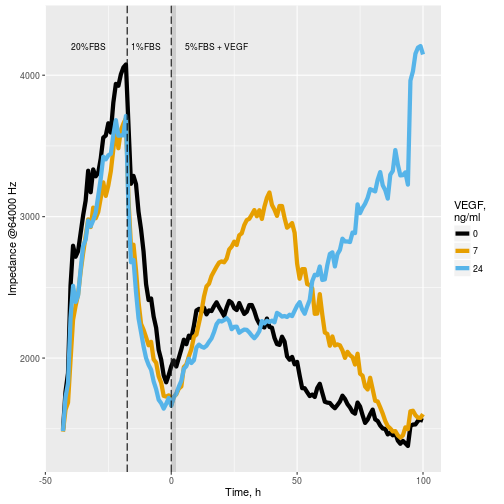

Vähi signaalirajad
Onkobioloogia
Taavi Päll
lektor, Tallinna Tehnikaülikool
Recap
Türosiinkinaas retseptorite struktuur
- Inimesel on 58 RTK-d (TK kokku 525 geeni)
- RTK tsütoplasmaatiline domään on konserveerunud.
- Suur varieeruvus rakuvälises domäänis.

Mutatsioonid kasvufaktorite retseptorites põhjustavad ligand-sõltumatut aktivatsiooni

Landscape of recurrent kinase fusions in solid tumours


Kasvufaktorid käivitavad signaalirajad
Rakkude kasv ja jagunemine sõltub kasvufaktoritest
- 10000 inimese endoteelirakku (HUVEC) külvati 96-welli ja kasvatati 20%FBS söötmes
- Seejärel rakud sünkroniseeriti rakutsükli G0 faasis, näljutades neid 1%FBS sisaldavas söötmes
- 5%FBS ja VEGF lisamine vabastas rakud blokist ja indutseeris nad jagunema
- Kuidas paneb kasvufaktorite seostumine ja retseptori aktivatsioon käima rakkude jagunemise-kasvu masinavärgi?

Signaaliülekande rada jõuab plasmamembraanist tuuma
- Kasvufaktorite seostumine retseptoritele käivitab rakus kiire ja vahetu vastuse
- Kasvufaktorite poolt indutseeritakse minutite jooksul kiirelt teatud geenide transkriptsioon
- uute valkude sünteesi ei toimu/ei lähe vaja.
- Selliseid kiirelt ekspresseeritavaid geene nimetatakse varajasteks geenideks (immediate early genes).
Varajasi geene on kokku kusagil sadakond.
| Geen | Asukoht rakus | Funktsioon |
|---|---|---|
| fos | tuum | AP-1 TF komponent |
| junB | tuum | AP-1 TF komponent |
| egr-1 | tuum | tsinksõrm TF |
| nur77 | tuum | steroidretseptor |
| Srf-1 | tuum | TF |
| myc | tuum | bHLH TF |
| \(\beta\)-aktiin | tsütoplasma | tsütoskelett |
| \(\gamma\)-aktiin | tsütoplasma | tsütoskelett |
| tropomüosiin | tsütoplasma | tsütoskelett |
| fibronektiin | rakuväline | ECM |
| glükoositransporter | plasmamembraan | glükoosiimport |
| JE | rakuväline | tsütokiin |
| KC | rakuväline | tsütokiin |
Signaalirajad on rakus ootel ning 'ready to fire'
- Seerumvabas söötmes arresteerunud rakkude indutseerimisel seerumiga valgu sünteesi inhibiitori juuresolekul (tsükloheksimiid) toimub varajaste geenide transkriptsioon normaalselt,
- viidates, et rakus istuvad seega mingid transkriptsioonifaktorid ja ootavad signaali mobiliseerumiseks.
- Lisaks varaste geenide transkriptsiooni indutseerimisele
- valgusünteesi kiirus suureneb
- vahetud muutused raku morfoloogias ja migratsioonis
Lisaks muutustele geeniekspressioonis toimuvad muutused ka raku morfoloogias

Varajastele geenidele järgneb sekundaarsete geenide ekspressiooni laine

- Pidevalt jagunevates rakkudes on paljud varajased geenid negatiivse tagasiside mehhanismide tõttu maha reguleeritud
Raku signaaliradade toimimine
Ras valk, osa signaalirajast
- Onkogeenselt aktiveeritud Ras (GTPaas) omab rakkudele samasugust transfomeerivat toimet kui sis (kasvufaktor) ja erbB (retseptor) onkovalgud
- Kuidas need onkogeenid omavahel seotud on?

Ras valgud
- Ras valgud toimivad GDP/GTP-sõltuvate lülititena.
- Ras-GDP: inaktiivne/Ras-GTP: aktiivne.
- Normaalselt on rakkudes Ras seotud GDP-ga ja mitteaktiivne.
- Rakuvälised stiimulid (nt. TGF-\(\alpha\)) põhjustavad transientse Ras-i aktivatsiooni.

Mutantsed Ras valgud on GAP-tundetud
- Ras toimib molekulaarse lülitina, mis aktiveeritakse GTP seostumisel
- Ras-i sisse ja välja lülitamist reguleerivad GEF (guanine nucleotide exchange factor) ja GAP (GTPase-activating protein) valgud
- GAP valgu seostumine tõstab Ras-i GTP hüdrolüüsi kiirust ~\(10^{5}\) korda
- Onkogeenselt aktiveeritud Ras-i mutantidel (nt. G12D, G12V) on väljalülitumine (GTP hüdrolüüs) rikutud

Ras isovormid
- Ras-i on kolm geeni: K-Ras, H-Ras, N-Ras
- K-Ras-il on kaks splaissingu isovormi:K-Ras-4A/B
- Ras valkude G-domääni struktuurid on identsed,
- kuid C-terminaalsed hüpervariaablid domäänid erinevad.

Ras isovormide sagedus vähis
Ras mutatsioonid on sagedased. K-Ras on enamasti suveräänne liider (va. N-RAS melanoomis).
| Primaarne kude | KRAS (%) | HRAS (%) | NRAS (%) | Kokku (%) |
|---|---|---|---|---|
| pankreas | 71 | 0 | <1 | 71 |
| koolon | 35 | 1 | 6 | 42 |
| peensool | 35 | 0 | <1 | 35 |
| sapijuha | 26 | 0 | 2 | 28 |
| endomeetrium | 17 | <1 | 5 | 22 |
| kops | 19 | <1 | 1 | 20 |
| nahk (melanoom) | 1 | 1 | 18 | 20 |
| emakakael | 8 | 9 | 2 | 19 |
| kusejuha | 5 | 10 | 1 | 16 |
Lisaks mutatsioonidele on alternatiivselt Ras aktiveeritud ka läbi neurofibromiini (Ras-GAP) somaatiliste deletsioonide: 14% glioblastoom, 13-14% melanoom, 8-10% kopsu adenokartsinoom, jne.
Son of sevenless
- Kasvufaktorite retseptoritest lähtuva signalisatsiooni lahendamine sai alguse Drosophila geneetikast.
- Drosophila silma ommatiidide arengut reguleeriv geen sevenless osutus türosiinkinaas retseptoriks, EGF retseptori homoloogiks.
- Edasine geneetiline komplementatsioon identifitseeris signaalirajas 'allpool' toimiva geeni son of sevenless, sos, mis osutus pärmi G valkude guaniin nuleotiidi vahetus faktorile (GEF) sarnaseks valguks.

Drosophila sevenless mutandil puudub ommatiididest seitsmes rakk ehk on ainult kuus rakku
Mis on sevenless-sos signaaliraja biokeemiline alus?
- Lisaks identifiseeriti Drosophilas geneetiliselt signaalirajas sevenless ja sos vahel toimivad adaptervalgud Shc, Grb2 ja Crk
Kuidas RTK fosforülatsioon tekitab signalisatsiooni?
p-RTK fosforüleerib ja aktiveerib rakus oma substraate
- aktiveeritud substraadid signaliseerivad
- RTK fosforülatsioon sekundaarse tähendusega
p-RTK seob teisi signaalvalke ja muudab nende lokalisatsiooni
- teiste signaalvalkude sisemine aktiivsus ei muutu
- moodustuvad signaliseerimiseks soodsad valgukompleksid
Src homoloogsed domäänid vahendavad valkude relokatsiooni
- SH1 kinaasne domään (Src homology 1).
- SH2 fosfotürosiin peptiidide dokkimiskoht
- inimese genoomis 121 SH2 domääni 115 valgus
- SH3 proliinirikkaid järjestusi sisaldavate järjestuste dokkimiskoht
- inimese genoomis ~300 SH3 domääni

Valkude dokkimiskohad

- SH2/3 pasteeritud väga erinevatesse valgulistesse kontekstidesse
- puhtalt adaptorvalgud ilma katalüütiliste domäänideta (Shc, Grb2)
- katalüütilisi domääne sisaldavad valgud (Src)
Olulisemad mitogeense signalisatsiooniga seotud dokkimisdomäänid
| Domään | Ligand | Domääni kandvaid valke |
|---|---|---|
| SH2 | fosfotürosiin | Src (kinaas), Grb2 (adapter), Shc (adapter), SHP2 (fosfataas), Cbl (ubikvitiini ligaas) |
| PTB | fosfotürosiin | Shc, IRS-1 (insuliini RTK adapter) |
| SH3 | proliinirikkad järestused | Src, Crk (adapter), Grb2, Cdc25 (CDK fosfataas), Bad (apoptoosi regulator), Raf (ser/thr kinaas), PKC (protein kinase C, ser/thr kinaas) |
| Bromo | atsetüleeritud lüsiin | P/CAF (transkriptsiooni kofaktor), kromatiinivalgud |
| PH | fosfoinositool | PLC-\(\delta\) (fosfolipaas C), Akt/PKB (ser/thr kinaas) |
RTK tsütoplasma domään sisaldab fosfo sidumissaite erinevatele valkudele


SH2 grupid vahendavad Ras aktivatsiooni RTK-de poolt
- türosiinkinaas retseptor-P \(\rightarrow\) SH2-Shc-P \(\rightarrow\) SH2-Grb2-SH3 \(\rightarrow\) proline-rich-Sos \(\rightarrow\) Ras
- türosiinkinaas retseptor-P \(\rightarrow\) SH2-Grb2-SH3 \(\rightarrow\) proline-rich-Sos \(\rightarrow\) Ras

Ras aktivatsioonil vabaneb tema 'effector loop'
- Receptacle for effectors comprises the so-called 'SWITCH REGIONS', which are three short segments that border the nucleotide-binding site.
- P-loop coordinates nucleotide binding,
- switch I and II regions make up a mobile binding surface that conforms to the nature of a bound nucleotide
Ras aktiveerib kolm põhilist signaalirada
Aktiveeritud Ras seotub ja aktiveerib oma effektorvalke:
- Raf kinaas
- Fosfatidüülinositool 3 kinaas, PI3K
- RalGDS (Ral GEF)


MAPK rada
- Ras-Raf-MEK-ERK signaalirada
- MAPK rada aktiveeritkse vastusena kasvufaktorite stimulatsioonile,
- Paljud MAPK raja substraadid on transkriptioonifacktorid (Ets, Elk-1 SAP-1) aga ka valgusüntees üle Mnk1 kinaasi vahendatud eIF4E aktivatsiooni

MAPK raja onkogeenne aktivatsioon

Fosfatidüülinositool 3 kinaas, PI3K rada
Ras - PI3K\(\gamma\) kompleks
- Ras seostumisel PI3K aktiveeritakse selle katalüütline domään, mis hakkab fosforüleerima plasmamembraanis olevaid fosfatidüül-inositool-4,5-difosfaate (PIP2)
PI3K fosforüülib PIP2>PIP3
Akt kinaas seostub üle oma PH domääni plasmamebraanile
- PIP3 vahendab PH-domääni sisaldava Akt kinaasi relokatsiooni plasmamembraanile

Akt/PKB rada mõjutab rakkude ellujäämist, jagunemist ja kasvu
| Bioloogiline effekt | Akt/PKB substraat | Funktsionaalne tagajärg |
|---|---|---|
| Anti-apoptootiline | ||
| Bad (pro-apopootline) | inhibitsioon | |
| kaspaas-9 (pro-apopootline) | inhibitsioon | |
| I$\kappa$B kinaas (anti-apopootline) | aktivatsioon | |
| FOXO1 TF (pro-apopootline) | inhibitsioon | |
| Mdm2 (anti-apopootline) | aktivatsioon | |
| Rakkude jagunemine | ||
| GSK-3\(\beta\) (anti-proliferatiivne) | inhibitsioon | |
| FOXO4 TF (anti-proliferatiivne) | inhibitsioon | |
| p21 (anti-proliferatiivne) | inhibitsioon | |
| Kasv (suurus) | ||
| Tsc2 (kasvu pidurdav) | inhibitsioon |
Genetic Alterations in the PI3K/Akt Pathway in Cancer
| Gene | Type of Alteration | Tumor Lineage |
|---|---|---|
| PTEN | Loss-of-function by somatic mutation | Brain, prostate, endometrium |
| Germline mutation (in 80% of Cowden Disease) | Cowden disease: Increased risk for breast, thyroid, genitourinary and endometrial cancer | |
| Promoter methylation | Melanoma, breast, colon | |
| Loss of heterozygosity | Prostate, melanoma, thyroid, breast, pancreas, ovary, brain, bladder, endometrium, cervix, head and neck, kidney, lung | |
| p110α | Gain-of-function by somatic mutation | Colon, breast, brain, ovary |
| Amplification | Ovary, gastric, lung, cervix | |
| p85 | Gain-of-function by somatic mutation | Brain, colon, ovary |
| AKT1 | Gain-of-function by somatic mutation | Breast, colorectal, ovary |
| AKT2 | Amplification | Ovary, lymphoma, pancreas |
| Mutation | Colorectal | |
| PDK1 | Mutation | Colorectal |
| TSC1/2 | Loss-of-function by mutation (occasionally with concomitant loss of heterozygosity for the wild type allele) | Tuberous sclerosis (hamartomas of the skin, brain and kidney; rare progression to malignancy) |
| TSC1 | Mutation | Bladder |
Ras-RalGDS rada
- Ral-GDS(guanine nucleotide dissociation stimulator, GEF) aktiveerib RalA ja RalB GTPaasid
- Ral effektorid on RalBP1 mis on Rac/Cdc42 GAP, Sec5 ja Exo84 mis on eksotsüst-kompleksi subühikud, Y-box transkriptsioonifaktor ZONAB
- Ral rada reguleerib seega rakkude morfoloogiat, kasvufaktorite retseptorite endotsütoosi, vesikulaarset transporti ja transkriptsioonifaktoreid

Jak-STAT rada signaliseerib otse tuuma
- Interferooni (IFN), erütropietiini (EPO) ja trombopoietiini (TPO) retseptorid moodustavad mittekovalentse kompleksi Jak türosiin kinaasidega
- Ligandi seostumisel rist-aktiveeritakse kinaasid ja fosforüleeritakse retseptorite sabad, millele seostuvad üle SH2 domäänide STAT transkriptsioonifaktorid
- Seostunud STAT-ide fosforüleerimisel moodustavad need üle SH2 domäänide dimeeri ja translokeeruvad tuuma

Jak-STAT vähis
- STAT aktiveerivad muuseas mitmeid rakkude jagunemiseks, ellu jäämiseks ja angiogeneesiks oluliste geenide transkriptsiooni: myc, tsükliinid D2 ja D3 ja anti-apoptootiline Bcl-XL, VEGF
- JAK2 V617F mutatsioon multimüeloomides
- STAT3 konstitutiivne aktivatsioon mitmetes kasvajates, sh. melanoomis, rinnakasvajates, pea-kaela lamerakulistes kartsinoomides
- STAT3 aktivatsioon vahendatud ilmselt üle Src-i
Integriini osalevad kasvufaktorite signalisatsioonis
- Aktiveeritud integriinidele seostunud FAK (focal adhesion kinase) fosforüleerimisel Src poolt tekivad FAK-ile SH2 dokkimiskohad, sh Grb2, Shc, PI3K, PLC-y
- FAK seostunud Grb2 seob ka Sos-i on seega võimeline aktiveerima Ras-Raf rada
- Integriin vahendatud Ras aktivatsioon võib seletada miks transformatsiooniga kaasneb adhesioon sõltumatu kasv

Wnt-\(\beta\)-kateniin rada
- Rada toimib β-kateniini stabiilsuse ja transkriptsioonilise aktiivsuse kontrollina
- Ligandi puudumisel toimub Axini kompleks vahendatud \(\beta\)-kateniini lagundamine
- Axin kompleks: struktuurvalgud Axin ja tuumor suppressor adenomatous polyposis coli (APC), casein kinase 1 (CK1) ja glycogen synthase kinase 3 (GSK3)
- CK1 ja GSK3 fosforüleerivad \(\beta\)-kateniini N-terminusest mistõttu selle tunneb ära \(\beta\)-Trcp E3 ubiquitin ligaasi subühik ja \(\beta\)-kateniin ubiquitineeritakse ja lagundatakse proteasoomis

Wnt raja mutatsioonid vähis
| Affected gene | DNA/mRNA alteration | Functional outcome | Cancer type |
|---|---|---|---|
| CTNNBl (b-catenin) | Missense/in-frame deletion | Enhanced protein stability | Hepatocellular/Medulloblastoma |
| APC (APC) | Truncation | Reduced regulatory activity | Colorectal/gastric |
| Axins (Axin I, Axin II) | Truncation/missense | Reduced regulatory activity | Hepatocellular/colorectal |
| CREBP(CBP) | Truncation/ missense | Inactive acetyltransferase | Lymphoma/leukemia |
| GSK3b | Missplicing, in-frame deletion | Inactive kinase | Leukemia |
| LRP5 | Missplicing, in-frame deletion | Loss of repression by DKK1 | Breast/parathyroid |
| TCF7L2 (TCF4) | Missense/deletion/truncation | Loss of repression | Colorectal |
| TCF7L2 (TCF4) | Fusion with VT11A gene | Unclear | Colorectal |
| FAB123B (WTX) | Truncation/deletion | Loss of function | Wilm’s tumor |
Hedgehog rada
- HH ligandid, imetajatel sonic hedgehog (SHH), Indian hedgehog (IHH) ja desert hedgehog (DHH) seostuvad patched 1 (PTCH1) retseptorile
- Ligandi seostumine PTCH1-le vabastab smoothened (SMO) transmembraanse valgu inhibitsioonist
- SMO signalisatsioon vabastab GLI1, GLI2 ja GLI3 transkriptsioonifaktorid inhibitsioonist tuumorsuppressorvalgu suppressor of fused (SUFU) poolt
- GLI1, GLI2 ja GLI3 transporditakse tuuma

Hedgehog rada vähis
- Imetajatel on SUFU Gli aktiivsuse peamine regulator
- Pärilikud SUFU mutatsioone on leitud medulloblastoomi, meningioomi patsientidel ja on seotud Gorlini sündroomiga, millega kaasneb kõrge risk saada basaalrakuline kartsinoom
- SUFU somaatilisi mutatsioone ja deleteerumist on leitud medulloblastoomides, kondrosarkoomides ja rhabdomüosarkoomides
HH raja mutatsioonid nahavähkides
| Gene | Mutation type | Tumor type | Percent mutated samples |
|---|---|---|---|
| Ptch I | Loss-of-function, nonsense | BCC | 40-67 |
| Missense, nonsense, splice site | BCC | 75 | |
| Missense, nonsense | cSCC | 17 | |
| Missense, nonsense, homozygous deletion | Melanoma | 3-5.5 | |
| SMO | Gain-of-function, missense | BCC | 9.5-20.6 |
| Missense | cSCC | 7.7 | |
| Missense, nonsense, amplification | Melanoma | 2.2-8 | |
| SUFU | Missense | BCC | 4.7 |
| Missense | cSCC | 2.6 | |
| Missense | Melanoma | 0.7-3.3 | |
| Shh | Translocation | BCC | One case |
| Missense, frameshift | cSCC | 17.9 | |
| Missense, amplification | Melanoma | 0-4.7 |
tabel jätkub
| Gene | Mutation type | Tumor type | Percent mutated samples |
|---|---|---|---|
| HHIP | Missense, nonsense, amplification | Melanoma | 6.6-9.1 |
| Missense | cSCC | 30.7 | |
| Gli1 | Missense, nonsense, amplification | Melanoma | 1.1-7.2 |
| Missense, nonsense | cSCC | 23 | |
| Gli2 | Missense, nonsense, amplification | Melanoma | 2.2-12.2 |
| Missense, nonsense | cSCC | 25.6 | |
| Gli3 | Missense, splice site, amplification | Melanoma | 3.3-7.2 |
| Missense, nonsense | cSCC | 23 |